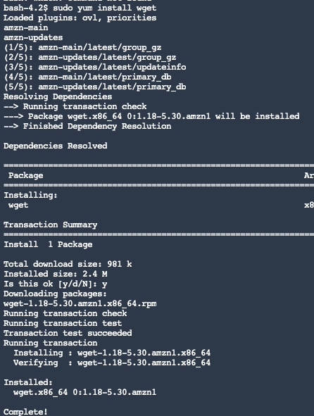

If you’re reading this page it means we can’t quite debug your software installation at the moment. Please:
image-20210420120455258
After logging in, you should see something like this. Click on the Amazon SageMaker Studio button. This may take a few minutes to load.
image-20210420120757020
Eventually, you will see an interface that looks like this:
image-20210420120951891
In order to proceed with the workshop, you’ll need to do two things: (1) get the data /once during the course of all of our training/, and (2) launch the correct version of python.
First, we’ll need to get the data.
launchterminal.png
# this will install wget
sudo yum install wgetType “y” when the command prompt hangs and asks you the question: “Is this ok? [y/d/N]”

The above should happen.
Then copy
sudo yum install unzipTo install the unzip command, and (again after saying “y” to the prompt) the following should happen:
image-20210420122316617
Finally, type the following command to get our data:
wget -q "https://cloudstor.aarnet.edu.au/plus/s/IfOvRpOXhJyqTT0/download" -O "data.zip" && unzip -qq "data.zip" && rm -rf "data.zip"This should result in a folder with your data becoming visible in the panel on the left:
image-20210420123648002
Next, you need to launch the correct python environment that has all of the packages we’ll need. To do this, close the terminal tab, and you’ll automatically see the central dashboard we did before. Click on Select a SageMaker Image and choose geopython v1 as shown in the image below:
image-20210420123823736
Then click on the GNotebook button to launch a new jupyter notebook instance
image-20210420123905147
You may need to wait a few seconds, after which the kernel will be working and you should be able to continue with the workshop. Note that you may need to import libraries again if we have already done so in class.
image-20210420124004533